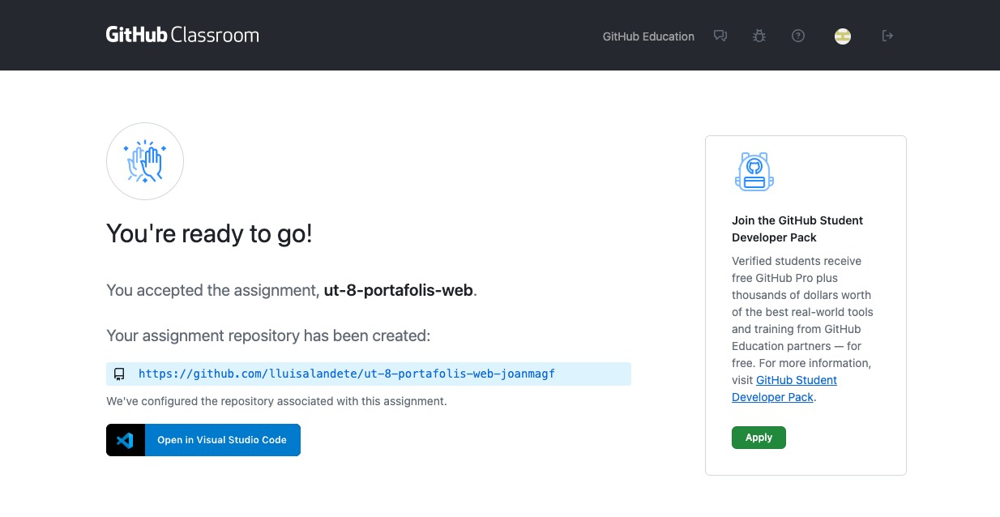

Indicacions Específiques per l'Alumnat
Instruccions de Configuració Inicial
1. Preparació de l'Entorn de Desenvolupament
Requisits del Sistema:
- Node.js 18+ instal·lat
- Visual Studio Code
- Git configurat amb el vostre nom i email
- Compte GitHub actiu
Extensions VS Code Recomanades:
- Astro
- Tailwind CSS IntelliSense
- ES7+ React/Redux/React-Native snippets
- Prettier - Code formatter
- GitLens
- Live Server
2. Creació del Projecte
Entrar al link Github Classroom: UT8
Al acceptar la solicitud seleccioneu quin alumne sou i vos creara el repositori amb el que anireu treballant  Pas 1: Fork del Template
# Navegar a GitHub Classroom
# Acceptar l'assignació del projecte
# Clonar el repositori assignat
git clone https://github.com/lluisalandete/utf-8-portafolis-web-joanmagf
cd utf-8-portafolis-web-joanmagf
Pas 2: Instal·lació de Dependències
npm install
npm run dev
Pas 3: Verificació
- Obrir http://localhost:3000
- Verificar que el projecte carrega correctament
Estructura de Fitxers Obligatòria
src/
├── components/
│ ├── Header.astro
│ ├── Footer.astro
│ ├── Hero.astro
│ ├── ProjectCard.astro
│ └── ContactForm.astro
├── layouts/
│ └── Layout.astro
├── pages/
│ ├── index.astro
│ ├── projects.astro
│ ├── about.astro
│ └── contact.astro
├── styles/
│ └── global.css
└── assets/
├── images/
└── icons/
Requisits Tècnics Mínims
HTML Semàntic
- ✅ Ús correcte de landmarks (
<header>,<main>,<footer>) - ✅ Estructura de headings coherent (h1 > h2 > h3)
- ✅ Atributs
alten totes les imatges - ✅ Formularis amb
<label>associats - ✅ Navegació amb
<nav>i ARIA labels
CSS/Tailwind
- ✅ Mobile-first responsive design
- ✅ Almenys 3 breakpoints (sm, md, lg)
- ✅ Variables CSS personalitzades
- ✅ Hover states en elements interactius
- ✅ Focus states accessibles
Accessibilitat (WCAG 2.1)
- ✅ Contrast mínim 4.5:1 per text normal
- ✅ Navegació per teclat completa
- ✅ Skip links implementats
- ✅ Textos alternatius descriptius
- ✅ Formularis amb validació accessible
Performance
- ✅ Imatges optimitzades (WebP quan sigui possible)
- ✅ Lazy loading per imatges below-the-fold
- ✅ Lighthouse Performance > 90
- ✅ First Contentful Paint < 2s
Guia de Contingut
Secció Hero
Contingut obligatori:
- Nom complet
- Títol professional (ex: "Desenvolupador Web Junior")
- Descripció breu (màx. 50 paraules)
- Fotografia professional
- Call-to-action clar
Exemple de text:
Hola, sóc [NOM]
Desenvolupador/a Web especialitzat/da en tecnologies front-end modernes.
Creo experiències web accessibles i amb un rendiment excel·lent.
[Botó: Veure el meu treball]
Secció Projectes
Mínim 3 projectes amb:
- Títol del projecte
- Descripció (màx. 100 paraules)
- Tecnologies utilitzades
- Captura de pantalla o GIF
- Enllaços a demo i codi font
- Challenges superats
Secció About
Contingut suggerit:
- Història personal i motivació
- Formació i experiència
- Habilitats tècniques i soft skills
- Interessos i hobbies
- Objectius professionals
Formulari de Contacte
Camps obligatoris:
- Nom (required)
- Email (required, validation)
- Missatge (required, min 20 chars)
- Checkbox privacitat (required)
Criteris de Qualitat del Codi
Organització
/* ✅ Bon exemple */
.hero-section {
@apply min-h-screen flex flex-col justify-center items-center;
background: linear-gradient(135deg, theme('colors.primary.500'), theme('colors.secondary.500'));
}
/* ❌ Evitar */
<div class="min-h-screen flex flex-col justify-center items-center bg-gradient-to-br from-blue-500 to-purple-600 p-4 sm:p-8 md:p-12 lg:p-16">
Commits
Format obligatori:
feat: add hero section with responsive design
fix: correct accessibility issues in navigation
docs: update README with deployment instructions
style: improve button hover animations
Freqüència mínima:
- Mínim 3 commits per sessió
- 1 commit per funcionalitat implementada
- Commits descriptius i atòmics
Instruccions de Desplegament AWS
Prerequisits
- Accés AWS Academy Lab activat
- Docker Desktop instal·lat
- AWS CLI configurat
Desplegament amb Docker i ECS
- Crear Dockerfile (veure guia completa)
- Build imatge Docker localment
- Push a ECR (Elastic Container Registry)
- Desplegar amb ECS Fargate
- Configurar Load Balancer per accés públic
📖 Veure Guia Completa de Desplegament AWS
Calendari de Lliuraments
Checkpoints Obligatoris
| Data | Milestone | Contingut |
|---|---|---|
| Setmana 2 | Checkpoint 1 | Header + Footer + Estructura |
| Setmana 4 | Checkpoint 2 | Hero + Projectes + Desplegament |
| Setmana 6 | Lliurament Final | Projecte complet + Presentació |
Format de Lliurament
GitHub:
- Codi font complet
- README actualitzat
- Històric de commits net
AWS Academy:
- Contenidor desplegat a ECS
- Load Balancer configurat
- Monitorització CloudWatch activa
Documentació:
- Reflexió personal (500 paraules)
- Justificació de decisions de disseny
- Dificultats trobades i solucions
Suport i Recursos
Canals de Comunicació
- Forum Moodle: Dubtes ràpids i col·laboració
- GitHub Issues: Problemes tècnics específics
- Tutories: Dimecres 15:00-16:00 (reserva prèvia)
Recursos d'Ajuda
Resolució de Problemes Comuns
Error: "npm run dev no funciona"
# Solució:
rm -rf node_modules package-lock.json
npm install
npm run dev
Error: "Docker build fails" - Verificar sintaxi del Dockerfile - Comprovar dependències en package.json - Revisar paths d'imatges i assets
Error: "ECS Task fails to start" - Verificar logs a CloudWatch - Comprovar configuració del Load Balancer - Revisar security groups i networking
Avaluació i Feedback
Criteris d'Excel·lència
- Innovació: Ús creatiu de tecnologies
- Atenció al detall: Poliment visual i tècnic
- Accessibilitat: Més enllà dels mínims
- Performance: Optimització avançada
- Documentació: Codi net i comentat
Feedback Continu
- Weekly check-ins: Revisió de progrés
- Peer reviews: Intercanvi entre companys
- Code reviews: Feedback tècnic detallat
- Presentation skills: Preparació de defensa
Recordeu: aquest projecte formarà part del vostre portafolis professional real. Invertiu temps en fer-lo excel·lent! 🚀